| 日付 | 2016年10月23日（日） |
|---|---|
| メンバー | 家族（妻、長女・5歳、長男・3歳） |
| アクセス | 車 |
息子が動物の名前をなかなか憶えないため、動物園に行くことにする。
図鑑を見るより実物を見た方が記憶にも定着しやすいだろう。
周辺に動物園はいくつかあるが、4年ぶりにズーラシアに行ってみることにする。
入口にはカボチャの人形。そういえば、今はハロウィンの時期だ。
自分が子供のころはハロウィンなど縁が無かったが、
最近はこの時期になると、どこもかしこもハロウィン一色だ。
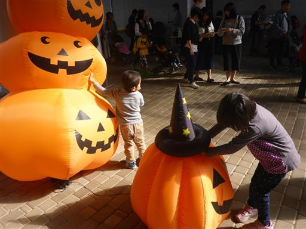
この動物園は木がたくさんあり、森の中に付けられた道を
歩くという雰囲気になっている。そして敷地は広大だ。
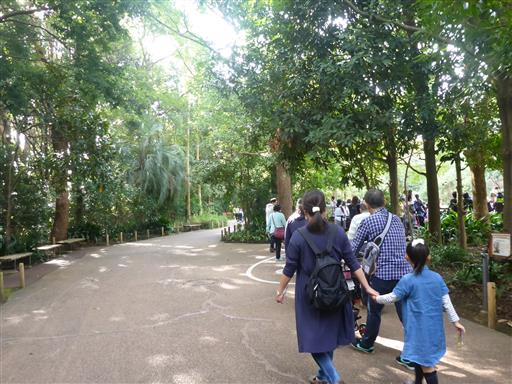
最初に現れたのはアジアゾウ。
本当に器用に鼻を使って草を食べている。まるで手のようだ。
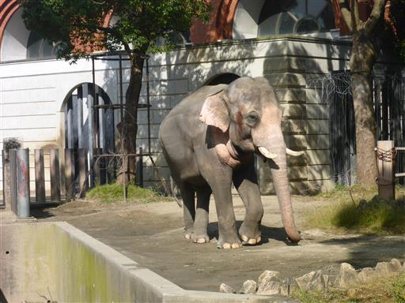
オランウータン。
非常に知能が高い動物で、ビンに水をくんで何やら遊んでいる。
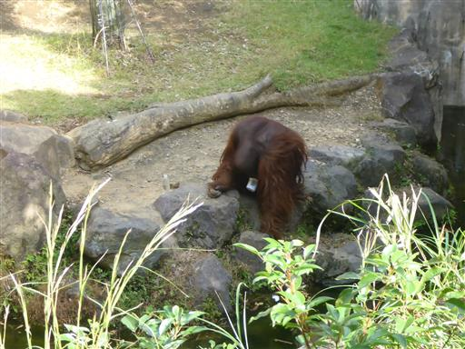
カワウソ。気前の良い奴で、何度も近くに寄って来てくれる。
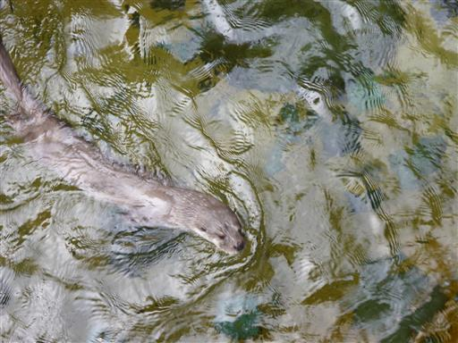
ひっくり返って白いお腹も見せてくれる。
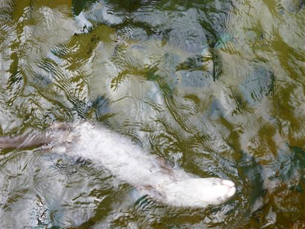
昼食は公園内のレストランでとる。
こういった場所にあるレストランは概してレベルが高くないが、
おにぎりはもう飽きたので、たまにはレストランも良いだろう。

ニホンザル。珍しい動物ではないが、一匹で遊んでいるサルや、
走り回っている子供ザル、毛づくろいをしているサルなど、見ていると飽きない。
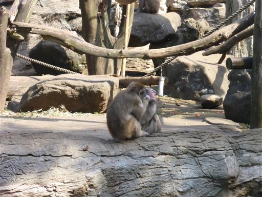
しばらく歩くと遊具広場に出て来る。
退屈しかけていた子供達は急に元気になって遊び始める。
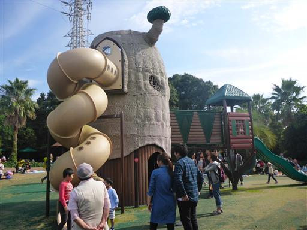
遊具の中はネットが張り巡らされている。子供が多く大混雑だ。
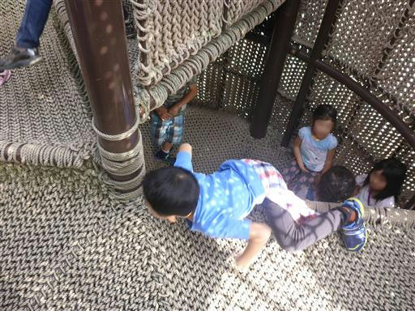
恐竜の骨の模型だろうか？なぜ動物園で恐竜？
上によじ登って遊んでいる。

最後にサイを見学。もう子供達は動物に飽きているようだ。
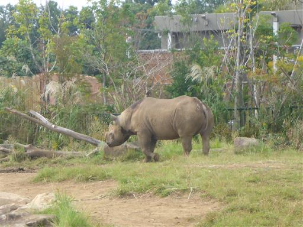
途中で見かけた遊具に戻って、ここでひと遊びする。
動物園なのだが、遊具も面白そうなものが多い。近所に一つ欲しい位だ。
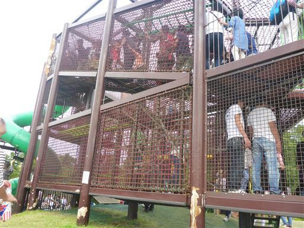
桜のような花が咲いている。冬桜だろうか？
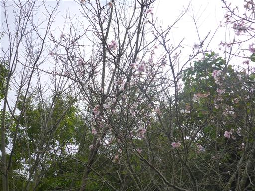
最後に駐車場近くの広場に移動。
こちらには大した遊具が無かったが、たまたまイベントでエアートランポリンが設置されている。
詳細は分からないが、対馬から来たツシマヤマネコのトランポリンだ。
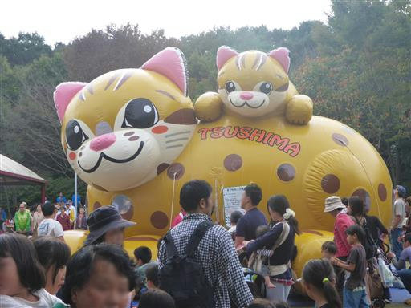
制限時間は5分。中で暴れ回って体を動かしたら、駐車場に戻って帰宅の途につく。
遊具では思いっきり遊べたが、動物をどの程度覚えられたのかはよく分からなかった。
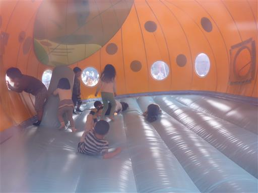